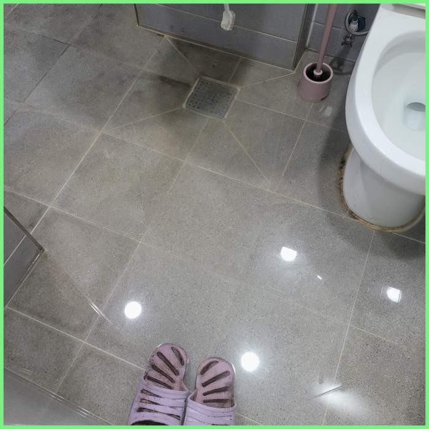
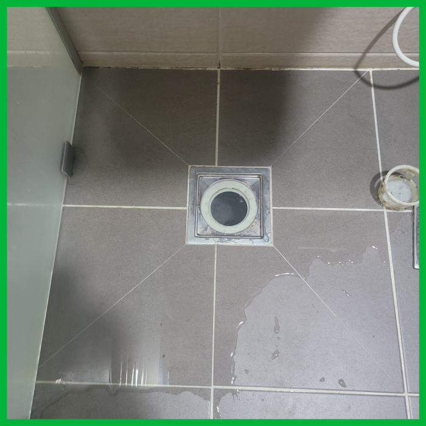
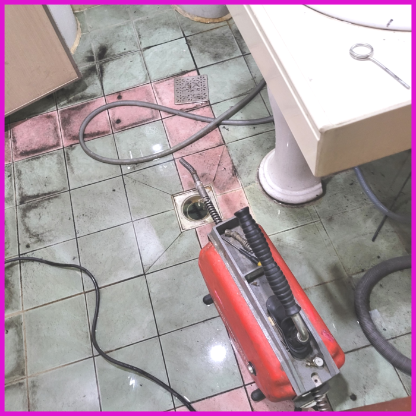
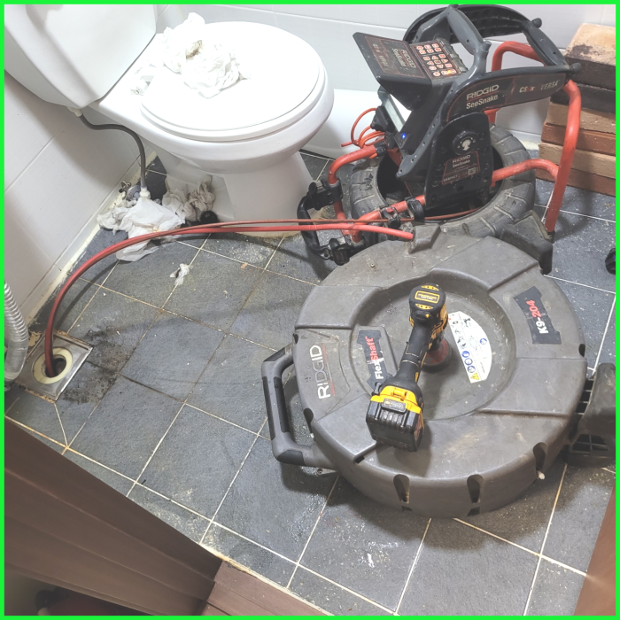
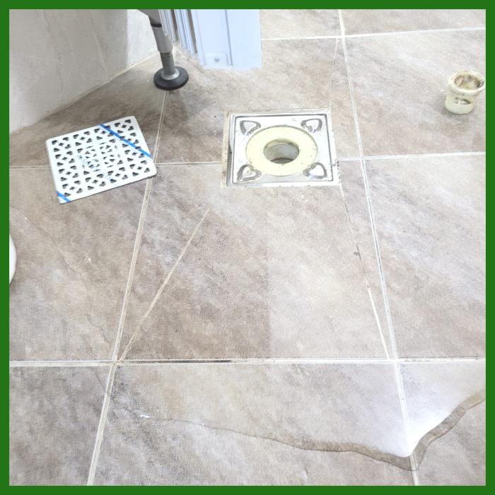
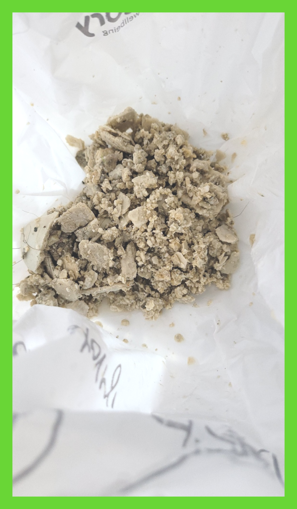

🏠 성남 상대원동 욕실하수구막힘 하대원동 화장실배수구역류 설비업체
성남 원동 싱크대막힘 전문 시공 후기

📋 작업 개요
- 위치: 성남 원동, 원동, 성남
- 서비스 유형: 싱크대막힘, 변기막힘, 하수구막힘, 배관막힘, 역류해결, 뚫는업체, 배관청소
- 작업 일시: 2024. 1. 24. 17:42
- 업체명: 하수구수사대 (010-5615-2118)
🔍 문제 상황
안녕하세요^^
설비전문업체 "하수구수사대"를 찾아주셔서 고맙습니다^^
반갑습니다! 대개 우리들이 생활속에서 당연하게 사용하고 있는 여러 종류의 하수도시설들이 연결되어 있는 배관에 막힘증상이 나타 난다면 많은 불편함이 생길겁니다.
저희는 다양한 상황에 따라 적합한 도구와 기술을 사용하여 퇴수를 청소하고, 이물질을 제거하도록 노력합니다. 저희가 제공하는 서비스는 고객님의 생활 환경에 최적화되어 있으며, 신속하고 정확한 퇴수작업으로 편안한 환경을 유지해드립니다.

🔎 원인 분석
💡 전문가 진단: 성남 상대원동 욕실하수구막힘 하대원동 화장실배수구역류 설비업체
성남 상대원동 욕실하수구막힘 하대원동 화장실배수구역류 설비업체
여러 배출관가 물이 안통할 만큼 막혔다면 어떤 장비로 해결을 해야 할까요? 어떤 상태인지에 따라 방법과 장비가 달라지는데요 이물질의 모양이 예상한 것보다 부드럽고 조금 막혀있다면 약품을 여러번 부어서 없애는 방법도 있지만 쉽게 뚫리지 않는 경우도 있습니다.
흔히 구조가 다르기도 하고 꺼내야 하는 이물질들의 양이 일반적으로 많기 때문이라고 할 수 있습니다. 이렇게 평균 비용보다 훨씬 더 합리적인 비용을 제시하는 업체의 경우에는 정확하게 시공을 해주었는지 그리고 퇴수구막힘 재발의 확률은 없는지를 다시 한번 생각해 보고 결정을 하셔야 합니다.
이번 현장에서 발생하는 것처럼 배관 하수도 막혔을 시에는 한 군데만 막힌 것이 아니고 다방면으로 막혔을 가능성이 있기에 꼼꼼하게 점검해야 해요.
배출관 구조를 명확히 이해하고 있어야만 작업 진행을 하기 전에 어떤 것으로 인해서 막히게 되었을지 간단한 예상도 할 수 있고 단계적인 진행을 할 때 이런 전문지식은 작업시간 단축에 큰 도움이 됩니다.
🔧 작업 과정
급한 마음에 전문 설비업체를 찾아볼 시간도 없이 집 근처 설비가게를 찾아 대충 퇴수구뚫어내면 얼마 안 되어 다시 막히고 또 출장비를 지불하고 뚫어내는 손해를 보시게 될 수도 있습니다.
게다가 악취까지 발생하고 있는 상황이었기에 신속한 대처가 필요했습니다. 보다 정확하게 원인을 알아내고자, 트랩을 열어 배관을 자세하게 확인해 보았는데요. 직접 확인하기 어려운 부분은 하수 배관 내시경 장비를 사용하여 확인했습니다.
샤프트는 이물질을 갈아내는 장비입니다. 덕분에 크기는 작아지고 배관에서 떨어지기 때문에 석션기를 통해 흡입하여 제거할수 있습니다. 플렉스샤프트를 이용하여 막힘의 원인을 제거하도록 합니다. 노즐도 길기 때문에 깊숙한 배출구배관속도 작업이 가능하고 전체적으로 깨끗하게 만드는 스케일링 작업을 할 수 있답니다.
이물질은 배출관내부에서 발생하는 배관 문제와 달리 이물질의 사이즈가 크고 종류가 다양합니다. 비닐, 플라스틱 재질이 배출관배관으로 들어온 경우 물에 녹지 않고 시간이 지나도 썩지 않기 때문에 계속해서 배관에 남아 있게 되죠.
하지만 오랫동안 쌓아온 내공과 업력을 바탕으로 어떤 배수막힘 문제도 수월하게 해결하고 있습니다. 이번 문제도 일반적인 문제가 아니라서 그렇지, 한 번씩 마주하는 일이기 때문에 능숙하게 처리하고 있습니다. 기름 덩어리가 점점 연해지면서 샤프트기로 분쇄 작업을 시작합니다.
배수청소를 할 때는 샤프트기로 내부 스케일링을 진행하면서 생기는 자잘한 잔여물들이 다른 곳으로 날아가 다시 문제를 일으키지 않도록 중간중간 석션기로 잔여물을 흡입해 제거해 줍니다. 이 과정을 반복해 주면 옛날처럼 배수배수가 콸콸콸 시원하게 이루어지는 모습을 확인할 수 있습니다.
고객님들이 직접 육안으로 확인이 가능한 전후 모습으로 제대로 작업이 성공적으로 끝났는지 확인하실 수 있습니다.
회는 우리가 평소에 몸을 씻으면서 발생하는 비누거품과 각질들이 뭉쳐지고, 굳으면서 생기는 덩어리인데요, 이런 석회들은 하루아침에 발생하는 게 아니며 오랜 기간에 걸쳐 발생됩니다. 스케일링 작업을 진행할 때 하수관내시경 장비는 꼭 사용해야 하는 장비인데요,


✅ 작업 완료
저희는 이 부분도 놓치지 않고 배관청소를 함으로서 향후 추가로 이물질을 유입하지 않는 한, 막힘 없이 사용하실 수 있도록 도와드렸습니다. 여러분동 비슷한 배관막힘 불편을 겪고 계시다면 지금 전문가에게 문의하세요!
#하수구막힘 #하수구뚫음 #하수구역류 #씽크대막힘 #싱크대역류 #오수관막힘 #하수구청소 #욕실하수구막힘 #변기막힘 #하수구뚫는비용 #싱크대수리 #화장실막힘




⚠️ 주방 싱크대 배관 막힘 예방 수칙
- ✅ 기름기가 묻은 식기나 프라이팬은 설거지 전 키친타올로 반드시 기름때를 닦아내세요.
- ✅ 주기적으로 싱크대 개수대에 뜨거운 물을 가득 받아 한 번에 내려 배관 내부 기름을 씻어내세요.
- ✅ 배수구 거름망을 미세한 필터로 사용하시고 음식물 찌꺼기가 틈으로 새어 들지 않게 관리하세요.
- ✅ 베이킹소다와 식초를 뜨거운 물과 함께 일주일에 한 번씩 부어주면 배관 살균과 막힘 예방에 좋습니다.
💡 핵심 정리
- 확실한 장비 작업(내시경 점검 및 샤프트 스케일링)으로 원인을 뿌리 뽑습니다.
- 작업 후 1년 이내에 동일한 부위 재발 시 100% 무상 A/S 서비스를 보장합니다.
- 서울 · 경기 · 인천 전 지역에 24시간 언제든 긴급 출동할 수 있도록 항시 대기 중입니다.
❓ 자주 묻는 질문 (FAQ)
🚨 성남 원동 싱크대막힘 문제로 고민이신가요?
정확한 원인 진단과 확실한 시공으로 재발 없는 해결을 약속드립니다.
24시간 긴급 출동 | 서울 · 경기 · 인천 전지역 | 1년 내 재발 시 무상 A/S